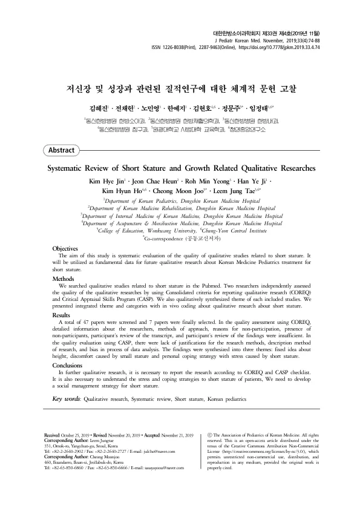

Systematic Review of Short Stature and Growth Related Qualitative Researches
Kim HJ, Jeon CH, Roh MY, Han YJ, Kim HH, Cheong MJ, Leem JT
The Journal of Pediatrics of Korean Medicine 33(4):74-88

첫 장 · 오픈액세스First page · open access
논문 소개Summary
키가 작은 아이와 그 가족이 무엇을 겪는지는 성장 클리닉의 숫자에 잡히지 않습니다. 키 백분위수와 골연령은 아이가 학교에서 무엇을 듣는지, 부모가 무엇을 걱정하는지를 알려 주지 않습니다. 그것을 다루는 것이 질적연구인데, 저신장에 관한 질적연구가 어느 정도 쌓였고 얼마나 믿을 만한지는 정리된 적이 없었습니다. 이 논문은 그 연구들을 모아 질을 평가하고 주제를 통합한 체계적 문헌고찰입니다.
펍메드에서 저신장 관련 질적연구를 찾아 47편을 선별하고 최종 7편을 골랐습니다. 두 연구자가 각각 COREQ 와 비판적 평가 기술 프로그램의 두 도구로 질을 평가했습니다.
두 도구가 서로 다른 빈틈을 짚었습니다. COREQ 로 보니 연구자에 대한 정보와 접근 방법, 참여하지 않은 이유와 비참여자의 존재, 참여자의 전사본 검토와 결과 검토에 대한 기술이 모자랐습니다. 비판적 평가 기술 프로그램으로 보니 연구 방법을 고른 근거와 연구를 기술하는 방식, 자료 분석 과정의 비뚤림에 대한 설명이 부족했습니다.
주제는 셋으로 통합되었습니다. 키에 대한 고정관념, 작은 키가 일으키는 불편, 그리고 저신장이 주는 스트레스에 개인이 대처하는 방식입니다. 병으로 다루기 전에 이미 사회적 시선과 그에 대한 대처가 자리 잡고 있다는 뜻이고, 진료가 만나는 것은 키만이 아니라 그 시선까지 포함한다는 뜻이기도 합니다.
저자들은 앞으로의 질적연구가 COREQ 와 비판적 평가 기술 프로그램의 점검표에 따라 보고되어야 한다고 적고, 저신장 환자의 스트레스와 대처 방식을 이해하는 일이 필요하다고 결론지었습니다. 이 결과는 저신장에 대한 한의 소아과 치료의 질적연구를 설계할 때 바탕 자료로 쓰입니다.
What a short child and their family live through does not register in the numbers of a growth clinic. Height percentile and bone age say nothing about what a child hears at school or what a parent worries over. Qualitative research is what handles that — yet no one had taken stock of how much such research on short stature existed, or how far it could be trusted. This paper gathers those studies, assesses their quality and synthesises their themes.
Qualitative studies related to short stature were searched in PubMed; 47 papers were screened and seven finally selected. Two researchers independently assessed quality using two instruments: COREQ and the Critical Appraisal Skills Programme.
The two tools exposed different gaps. Under COREQ, detailed information about the researchers, methods of approach, reasons for non-participation and the presence of non-participants, and participants' review of transcripts and of findings were all insufficient. Under the Critical Appraisal Skills Programme, justifications for the research methods, the manner of describing the research, and bias in the process of data analysis were inadequately addressed.
Three themes were synthesised: fixed ideas about height, the discomfort caused by small stature, and personal strategies for coping with the stress it brings. Before short stature is treated as a condition, in other words, social regard and the response to it are already in place.
The authors write that future qualitative research must be reported according to the COREQ and CASP checklists, and conclude that understanding the stress of short stature and how patients cope with it is necessary. The findings serve as groundwork for designing qualitative research on Korean medicine paediatric treatment for short stature.
인용Cite
Kim HJ, Jeon CH, Roh MY, Han YJ, Kim HH, Cheong MJ, Leem JT. Systematic Review of Short Stature and Growth Related Qualitative Researches. The Journal of Pediatrics of Korean Medicine. 2019;33(4):74-88. doi:10.7778/jpkm.2019.33.4.74